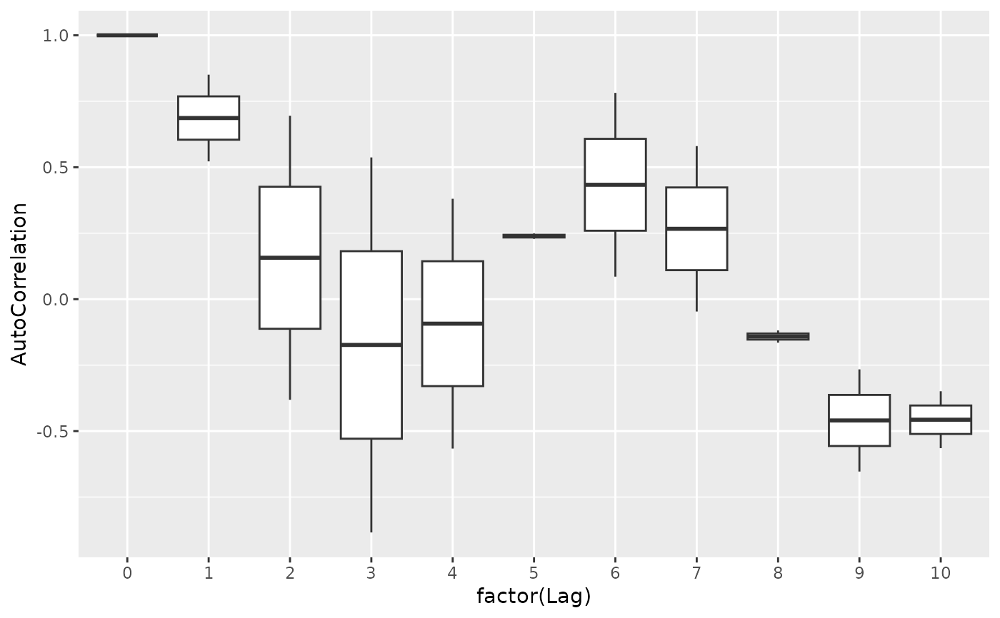

This function estimates the autocorrelation over time in a time series by a higher level unit, given by ID.
Usage
acfByID(
xvar,
timevar,
idvar,
data,
lag.max = 10L,
na.function = c("na.approx", "na.spline", "na.locf"),
...
)Arguments
- xvar
A character string giving the variable name of the variable to calculate autocorrelations on.
- timevar
A character string giving the variable name of the time variable.
- idvar
A character string giving the variable name of the ID variable. Can be missing if only one time series provided, in which case one will be created.
- data
A data.table containing the variables used in the formula. This is a required argument. If a data.frame, it will silently coerce to a data.table. If not a data.table or data.frame, it will attempt to coerce, with a message.
- lag.max
An integer of the maximum lag to estimate. Must be equal to or greater than the number of observations for all IDs in the dataset.
- na.function
A character string giving the name of the function to use to address any missing data. Functions come from the zoo package, and must be one of: “na.approx”, “na.spline”, “na.locf”.
- ...
Additional arguments passed to
zoo.
Examples
## example 1
dat <- data.table::data.table(
x = sin(1:30),
time = 1:30,
id = 1)
acfByID("x", "time", "id", data = dat)
#> id Variable Lag AutoCorrelation
#> <num> <char> <int> <num>
#> 1: 1 x 0 1.0000000
#> 2: 1 x 1 0.5272823
#> 3: 1 x 2 -0.3846405
#> 4: 1 x 3 -0.8936820
#> 5: 1 x 4 -0.5734476
#> 6: 1 x 5 0.2329966
#> 7: 1 x 6 0.7732559
#> 8: 1 x 7 0.5874209
#> 9: 1 x 8 -0.1029345
#> 10: 1 x 9 -0.6451019
#> 11: 1 x 10 -0.5718883
## example 2
dat2 <- data.table::data.table(
x = c(sin(1:30), sin((1:30)/10)),
time = c(1:30, 1:30),
id = rep(1:2, each = 30))
dat2$x[4] <- NA
res <- acfByID("x", "time", "id", data = dat2, na.function = "na.approx")
ggplot2::ggplot(res, ggplot2::aes(factor(Lag), AutoCorrelation)) +
ggplot2::geom_boxplot()

## clean up
rm(dat, dat2, res)